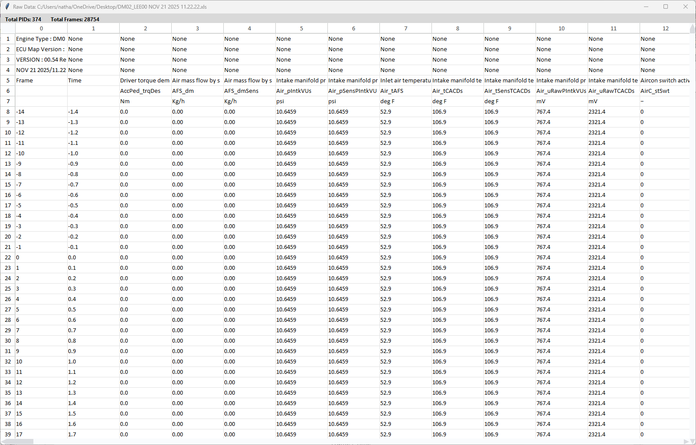

Raw Data Table
The Raw Data Table displays the complete, unprocessed snapshot data in a spreadsheet-like view. This allows you to examine all PIDs and their values across every frame captured in the snapshot.

Important: The data shown in this table is a copy of the original snapshot data.
While you can edit cells within the table window, these changes do not modify the original snapshot file.
Any edits you make are temporary and will be lost when the window is closed.
Table Information
The top of the window displays summary information about the snapshot:
- Total PIDs - The number of parameters (columns) in the snapshot
- Total Frames - The number of data samples (rows) captured
- Rows Loaded - Shows how many rows are currently loaded in the table
Loading Rows
For faster performance, the table initially loads only the first 200 rows. Use the loading buttons to view more data:
- Load More Rows - Loads the next batch of 200 rows into the table
- Load All - Loads all remaining rows at once (may take a moment for large snapshots)
Search Function
The search box allows you to find specific text within the table:
- Search Box - Enter your search term here. Press Enter or click Find to search.
- Find - Searches the column headers and loaded data for matching text
- ▲ / ▼ - Navigate to the previous or next match
- Clear - Clears the search highlighting and resets the search
Matching cells and headers are highlighted in yellow. The search is case-insensitive and searches both column headers and cell values.
Table Interactions
The table supports several interactions:
- Cell Selection - Click to select individual cells.
- Row/Column Selection - Click row numbers or column headers to select entire rows or columns
- Column Resizing - Drag column borders to adjust width
- Copy/Paste - Use Ctrl+C to copy selected data and Ctrl+V to paste
- Right-Click Menu - Access additional options like copy, paste, and undo
- Arrow Keys - Navigate between cells using keyboard arrows. Hold the shift key to select mutiple cells
Opening the Raw Data Table
To open the Raw Data Table, go to the View menu and select Raw Data Table, or use the keyboard shortcut if available.